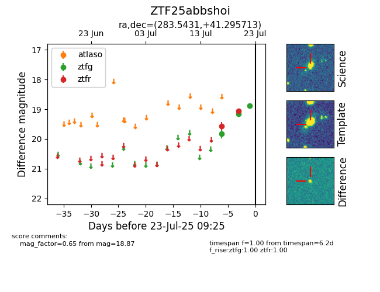

Target ZTF25abbshoi at 2025-07-23 12:37, see:
FINK: fink-portal.org/ZTF25abbshoi
Lasair: lasair-ztf.lsst.ac.uk/objects/ZTF25abbshoi
ALeRCE: alerce.online/object/ZTF25abbshoi
alt names
ZTF25abbshoi (ztf,fink)
coordinates:
equatorial (ra, dec) = (283.5431,+41.29571)
galactic (l, b) = (71.1436,+17.03447)
photometry
last ztfg=18.87, ztfr=19.05
3 ztfg, 2 ztfr detections
